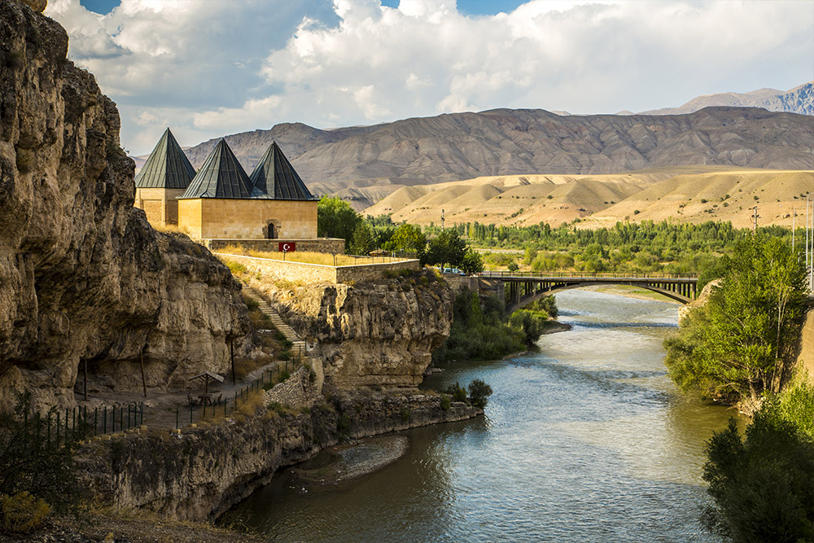
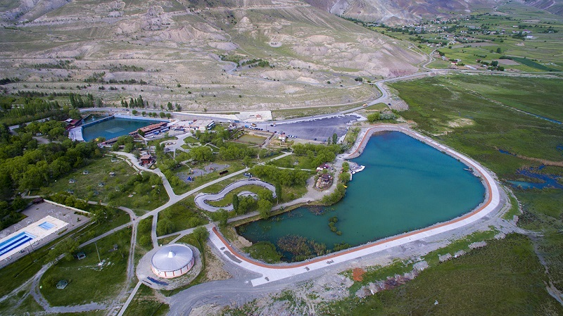
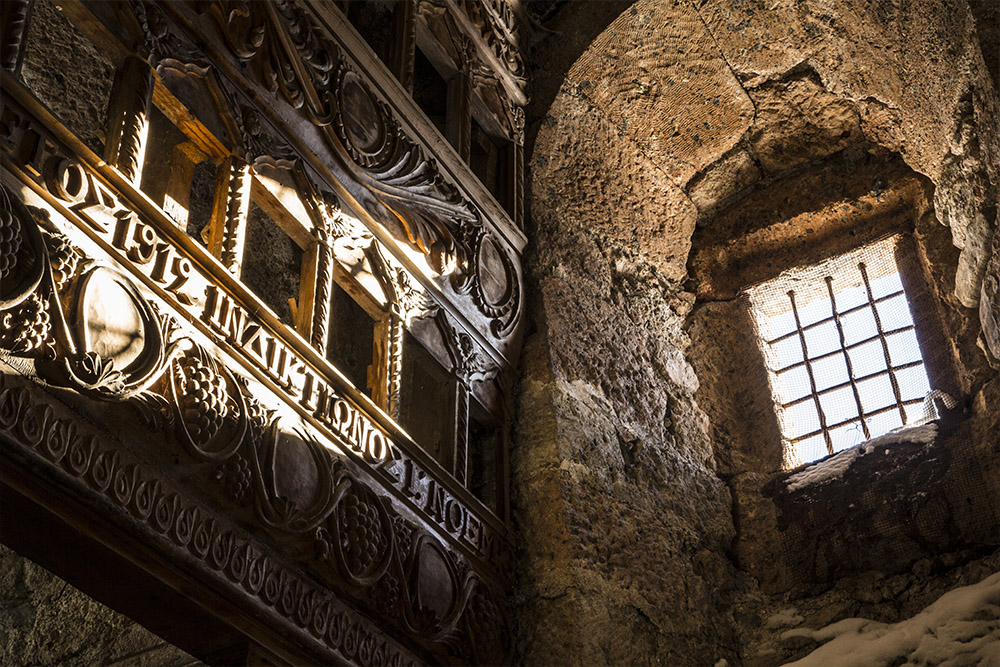
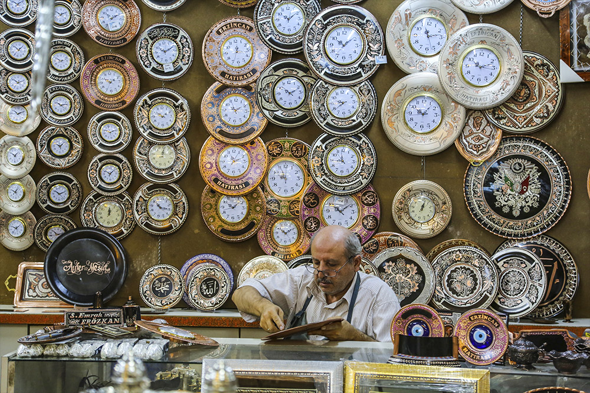

Mutasavvıf Muhammed Vehbi, terzi olduğu için Erzincan’da “Terzibaba” olarak anılıyormuş. 1848 yılında vefatının ardından Kaledibi Mezarlığı’na defnedilmiş ve mezarlık da o günden itibaren “Terzibaba Mezarlığı” adını almış. Muhammed Vehbi için yapılan türbe yanızca manevi yönüyle değil; mimari olarak da oldukça etkileyici. Sade bir görünüme sahip yapı, çevre düzenlemesiyle birlikte ziyaretçilerine farklı duygular yaşatıyor.
Özgün mimarisi ile Kemaliye Evleri, Erzincan’ın simgesi haline gelmiş tarihi yapılardan biri. Bölgeye gelen turistlerin fotoğraf molası verdiği bu evlere ilçe merkezi başta olmak üzere Apçağa, Başpınar, Ergü, Ocak, Salihli, Sırakonak, Yeşilyamaç, Yeşilyurt ve Yuva köylerinde rastlayabilirsiniz. Dikkat çeken Selçuklu Osmanlı tarzı mimarisi büyük bir bölümü taş geri kalanı ise ahşap olmak üzere pek çok ev, uzun yıllardır Erzincan’ın farklı yerleşim yerlerinde ziyaretçilerini bekliyor.
Mama Hatun Külliyesi’nin yakınında yer alan türbe, 1192’de ölen Saltuklu Prensesi Mama Hatun adına yaptırılmış tarihi yerlerden biridir. Türbede yer alan kitabeye göre yapı mimarı Ahlatlı Ebu’n-Nema bin Mufaddal ünlü bir isim. Saltuklu mimarisinin etkileyici çizgilerini göreceğiniz türbenin yanında kervansaray, hamam ve bir mescit yer alıyor.
Abidevi görünüşlü, kare kaide üzerindeki kümbet çevre duvarlarının ortasında iki katlı olarak yer almaktadır. Yuvarlak türbenin üst köşeleri pahlanarak sekizgene dönüştürülmüştür. Mama Hatun’un gömülü bulunduğu kare planlı mumyalık kısmına dört basamaklı bir merdivenle inilmektedir. Bu bölümün üzeri çapraz tonozla örtülmüştür. Burada ayrıca on bir mezar bulunmaktadır. Mumyalığın üzerindeki mekan 13.15 m. çapındadır. Üzeri tonoz örtülüdür. Üst kat mescide ayrılmış olup yedi basamakla buraya çıkılmaktadır. Türbenin içerisini aydınlatan mazgalların çevresi üzüm salkımları ve rozetlerle bezenmiştir.